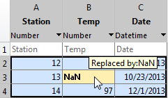
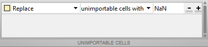

Read Spreadsheet Data Using Import Tool
This example shows how to import data from a spreadsheet into the workspace using the Import Tool and also to import data from the clipboard.
Select Data Interactively
On the Home tab, in the Variable
section, click Import Data
 . Alternatively, in the Files panel, double-click
the name of a file with an extension of
. Alternatively, in the Files panel, double-click
the name of a file with an extension of .xls,
.xlsx, .xlsb, or .xlsm.
The Import Tool opens.
Select the data you want to import. For example, import data that corresponds to data for three column vectors. You can edit the variable names, and you can select noncontiguous sections of data for the same variable.

On the Import tab, in the Output Type section, select how you want the data to be imported. The option you select dictates the data type of the imported data.
| Option Selected | How Data Is Imported |
|---|---|
| Column vectors | Import each column of the selected data as an individual
m-by-1 vector. |
| Numeric Matrix | Import selected data as an
m-by-n numeric
array. |
| String Array | Import selected data as an
m-by-n string
array. |
| Cell Array | Import selected data as a cell array that can contain multiple data types, such as numeric data and text. |
| Table | Import selected data as a table. |
If you choose to import the data as a matrix or as numeric column vectors, the
tool highlights any nonnumeric data in the worksheet. Each highlight color
corresponds to a proposed rule to make the data fit into a numeric array. For
example, you can replace nonnumeric values with NaN. Also, you
can see how your data will be imported when you place the cursor over individual
cells.

You can add, remove, reorder, or edit rules, such as changing the replacement
value from NaN to another value. All rules apply to the imported
data only and do not change the data in the file. Specify rules any time the range
includes nonnumeric data and you are importing into a matrix or numeric column
vectors.
Any cells that contain #Error? correspond to formula errors in
your spreadsheet file, such as division by zero. The Import Tool regards these cells
as nonnumeric.
When you click the Import Selection button, the Import Tool creates variables in your workspace.
For more information on interacting with the Import Tool, watch this video.
Import Data from Multiple Spreadsheets
If you plan to perform the same import operation on multiple files, you can generate code from the Import Tool to make it easier to repeat the operation. On all platforms, the Import Tool can generate a program script that you can edit and run to import the files. On Microsoft® Windows® systems with Excel® software, the Import Tool can generate a function that you can call for each file.
For example, suppose that you have a set of spreadsheets in the current folder
named myfile01.xlsx through myfile25.xlsx, and
you want to import the same range of data, A2:G100, from the
first worksheet in each file. Generate code to import the entire set of files as
follows:
Open one of the files in the Import Tool.
From the Import Selection button, select Generate Function. The Import Tool generates code similar to the following excerpt, and opens the code in the Editor.
function data = importfile(workbookFile, sheetName, range) %IMPORTFILE Import numeric data from a spreadsheet ...
Save the function.
In a separate program file or at the command line, create a
forloop to import data from each spreadsheet into a cell array namedmyData:numFiles = 25; range = 'A2:G100'; sheet = 1; myData = cell(1,numFiles); for fileNum = 1:numFiles fileName = sprintf('myfile%02d.xlsx',fileNum); myData{fileNum} = importfile(fileName,sheet,range); end
Each cell in myData contains an array of data from the
corresponding worksheet. For example, myData{1} contains the data
from the first file, myfile01.xlsx.
Paste Data from Clipboard
In addition to importing data interactively, you can also paste spreadsheet data from the clipboard into MATLAB®.
First, select and copy your spreadsheet data in Microsoft Excel, then use one of the following methods:
On the Workspace panel title bar, click the Workspace actions button , and then select Paste.
Open an existing variable in the Variables editor, right-click, and then select Paste Excel Data.
Call
uiimport -pastespecial.
See Also
Import Tool | readmatrix | readcell | readvars | readtable | detectImportOptions